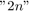
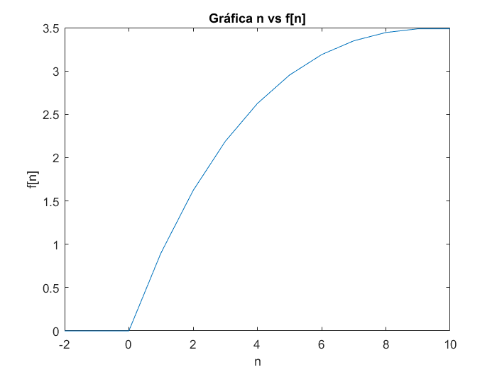

Práctica 3: Señales en tiempo discreto
Contents
Integrantes
Luis Francisco Barrera Bautista
Ingrid Pulido Morales
Objetivos
- Manipulación básica de MATLAB
- Gráficas de señales reales y complejas discretas
- Transformación de señales discretas (escalamientos y traslaciones)
- Calculo de energía y potencia de señales discretas
Introducción
Las señales en tiempo discreto se representan matemáticamente como secuencias de números. Una secuencia de números x, en los que el n-ésimo número se indica como x[n], se escribe formalmente así:
![$x={x[n]}, -\infty < n < \infty$](ASySPrac3LuisBarreraIngridPulido_eq03888157404719222356.png)
siendo n un número entero.
Este tipo de señales sus alturas solo se evaluan en números enteros. Usualmente las señales en tiempo discreto se representan gráficamente de la siguiente manera

Escalamiento Horizontal de señales en tiempoo discreto
El escalamiento horizontal es una operación que se realiza a señales base para generar nuevas señales en tiempo discreto.
Lo que significa que se va a escalar de manera horizontal (lo que indica la h) b unidades a la señal.
Ejemplo 1
Se tiene la siguiente señal discreta

Se va a escalar a con un escalamiento hoizontal con . Sustituyendo en la fórmula original donde exista por  y simplificando, obtenemos
Esto significa que la altura será 1 si la n está entre y , pero solo se evalauarán los números enteros entre estas dos cantidades los cuales son y .
De igual forma en nos quedaremos solamente con el . Y se obtiene la siguiente gráfica

- Cuando se tiene una compresión de la señal, es decir, se hace más corta horizontalmente.
También sucede que en el escalamiento horizontal de señales discretas se pierden "datos" a lo cual se le llama Decimation, como se observa en la gráfica
Ejemplo 2
Para calcular las alturas tenemos que evaluar los enteros de y en y ver si el resultado está definido en la gráfica original, es decir, si evaluamos a 9 en queda como resultado un 3, el cual está definido en la gráfica original con altura , pero si evaluamos el numero 8, quedan y ese resultado no está definido en la gráfica. Por lo tanto

- Cuando la señal se expande y en señales discretas cuando expandimos una señal, podemos decir que le faltan "datos", o que ocurre una "Interpolación".
Las muestras faltantes no están definidas o se les considera como ceros.
Ejemplo 3
- Cuando la señal se invierte horizontalmente de la orginial como se muestra a continuación.

- Si , la señal se comprime e invierte horizontalmente.

- Si , la señal se expande e invierte horizontalmente.

Desarrollo
Punto 1
Creación de funciones
Se mostrará un ejemplo de una función que reciba 3 parámetros. Tomando en cuenta que r , W y n
function [res]=fun1(r,W,n) res = r.^n.*cos(W*n)+r.^n.*sin(W*n)*i; end
Punto 2
Funciones de
n=-2:10; a=0.9; grafdisc1(n,a)
Punto 3
- para y


Punto 4
Energía de una señal discreta
A continuación se muestra el código para obtener la Energía de una señal en tiempo discreto
function [energia] = energiadis(time,alt ) energia=sum((abs(alt)).^2); x=time; y=alt; maxx=max(x)+1; minx=min(x)-1; maxy=max(y)+1; miny=min(y)-1; stem(x,y) axis([minx maxx miny maxy]) end
Punto 5
Problemas Resueltos (Lathi)
- 3.1.1 c): Encuentre la energía de la señal descrita.
Sabemos que
Calculándola con la función anterior (energiadis)
ENERGIA=energiadis([-4:6],[0,-9,-6,-3,0,3,6,9,0,0,0])
ENERGIA = 252
Punto 6
- 3.2.3: Para la señal mostrada a continuación, bosqueja las siguientes señales

a. x[-n]

b. x[n+6]

c. x[n-6]

d. x[3n]

e.

f. x[3-n]